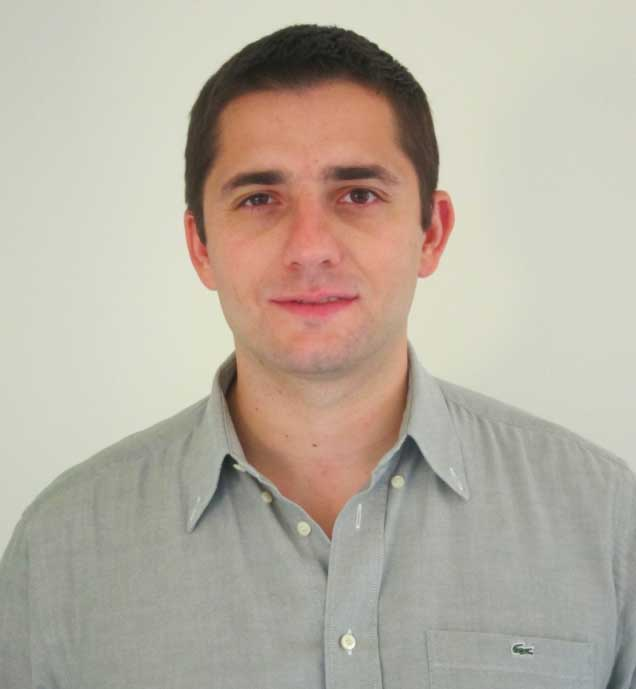
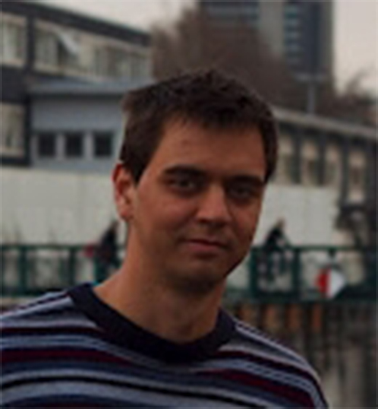
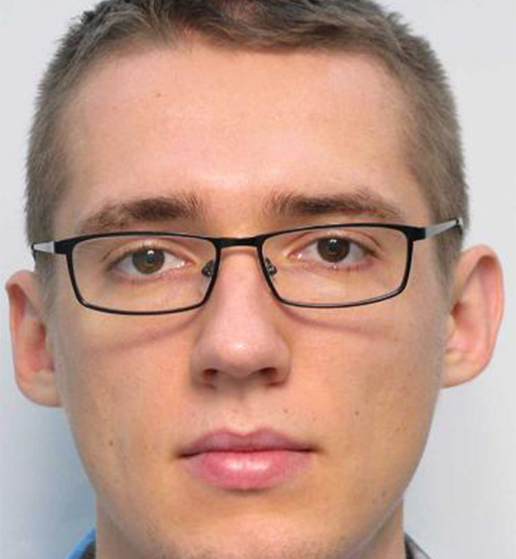
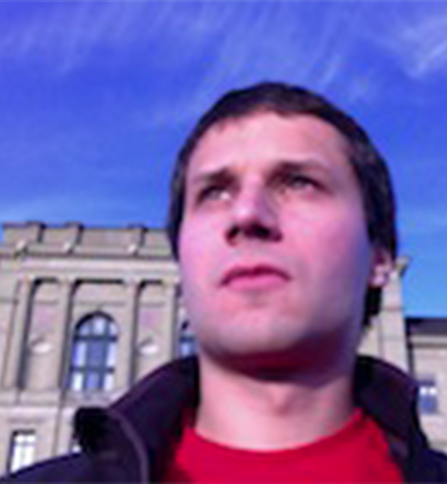
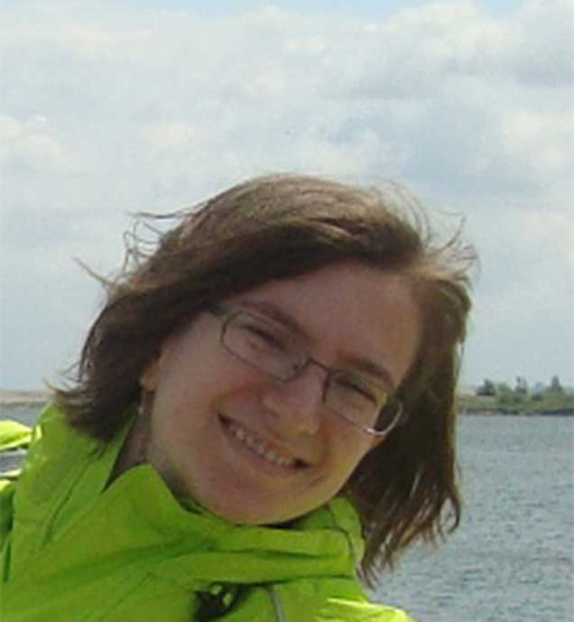
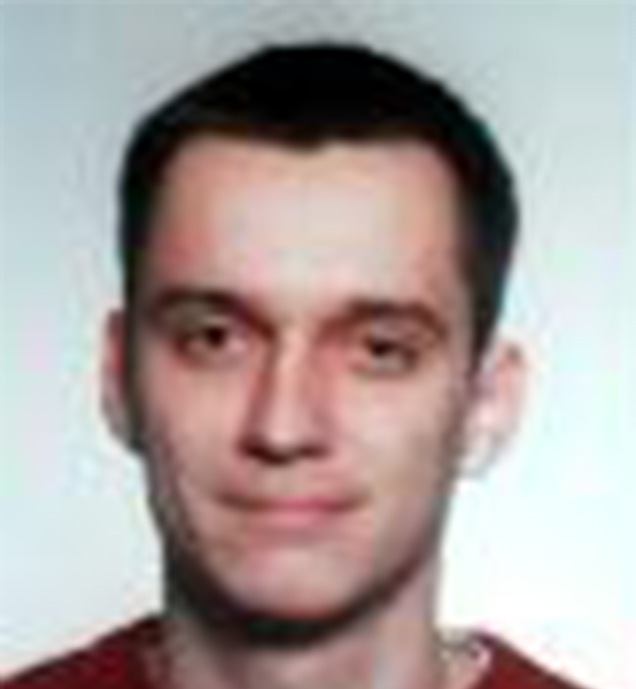

Faculty






B.Sc. Thesis Students
Research in Computer Science Students
- Boris Peltekov, Topic: Statistical Completion for Scripting Languages
- Timon Gehr, Topic: Synthesis of Logical Specs from Examples
Interns
- Peter Ivanov (Moscow State University): July 1, 2012 - August 28, 2012
Topic: Abstractions for Biological Systems - Svetoslav Karaivanov (Sofia University): July 15, 2013 - Dec 15, 2013
Topic: Statistical Machine Translation of Programming Languages - Casper Jensen (Aarhus University): Sept 10, 2014 -
Topic: Model Checking Event Driven Applications
SRL Visitors
- Eran Yahav (Technion), Dana Drachsler (Technion), Yuri Meshman (Technion), Marco Pistoia (IBM Watson Research), Patrick Lam (Waterloo), Armando Solar-Lezama (MIT), Anders Moller (Aarhus), Eric Koskinen (NYU), David F. Bacon (IBM Watson Research)